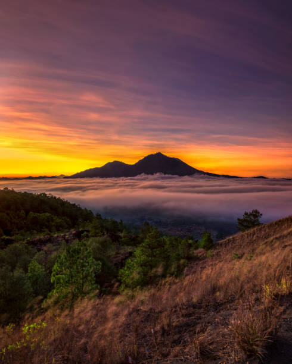

Gunung Batur Kintamani
Gunung berapi aktif dengan pemandangan indah dan danau alami di sekitarnya.

Hutan Mangrove Ngurah Rai
Kawasan hijau ekowisata pesisir Bali yang menjaga ekosistem pantai.
Nikmati pengalaman modern yang menjaga alam!
Gunung berapi aktif dengan pemandangan indah dan danau alami di sekitarnya.
Kawasan hijau ekowisata pesisir Bali yang menjaga ekosistem pantai.
Green & Smart Tourism adalah sebuah inisiatif pariwisata berkelanjutan yang hadir dari kesadaran bahwa masa depan wisata Bali harus berjalan seiring antara modernitas dan pelestarian alam. Kami bukan sekadar platform informasi wisata, melainkan gerakan digital yang berupaya menghadirkan pengalaman perjalanan yang ramah lingkungan, cerdas, serta memberi manfaat nyata bagi masyarakat lokal.
Lahir dari kombinasi antara teknologi dan kearifan lokal, kami memanfaatkan website wisata digital sebagai sarana edukasi, reservasi, hingga promosi ekowisata berbasis komunitas. Melalui pendekatan ini, wisatawan dapat merencanakan perjalanan dengan lebih mudah dan efisien, sekaligus memahami pentingnya menjaga kelestarian lingkungan. Setiap informasi yang kami sajikan dikurasi untuk menekankan nilai-nilai ekowisata, keberlanjutan, dan budaya Bali yang otentik.
Destinasi yang kami angkat bukanlah sembarang tujuan wisata, melainkan lokasi-lokasi yang mencerminkan prinsip Green & Smart Tourism. Misalnya, Desa Wisata Penglipuran yang dikenal dengan tata ruang dan tradisi adatnya, Gunung Batur Kintamani dengan lanskap vulkaniknya yang menawan, Hutan Mangrove Ngurah Rai sebagai paru-paru kota, hingga Pantai Sanur Eco Beach yang dirancang sebagai kawasan pesisir ramah lingkungan. Semua dipilih dengan visi menghadirkan wisata yang indah, edukatif, dan berkelanjutan.
Kami percaya bahwa teknologi bukan ancaman bagi tradisi, melainkan jembatan. Melalui platform digital, wisatawan bisa mendapatkan informasi real-time, melakukan reservasi tanpa kertas, mengakses peta interaktif, serta mempelajari kebudayaan lokal sebelum berkunjung. Sementara itu, masyarakat lokal memperoleh ruang untuk memperkenalkan produk, homestay, dan layanan wisata mereka secara lebih luas.
Visi kami adalah menjadikan Bali sebagai contoh dunia dalam mengelola pariwisata yang modern sekaligus ramah lingkungan. Kami berkomitmen pada prinsip keberlanjutan: mengurangi penggunaan plastik sekali pakai, mendorong penggunaan energi terbarukan, dan mendukung sistem pengelolaan sampah terpadu. Dengan begitu, setiap perjalanan bukan hanya meninggalkan kenangan, tetapi juga kontribusi nyata bagi alam dan masyarakat Bali.
Green & Smart Tourism adalah tentang perjalanan yang bertanggung jawab. Di sini, modernitas bertemu dengan tradisi, teknologi berjalan beriringan dengan budaya, dan wisatawan menjadi bagian dari solusi menjaga Bali agar tetap lestari bagi generasi mendatang.